Since 1963, the UCSF Archives and Special Collections holdings
have included the historic Danz collection of ocular pathology specimens. The
set, one of 13 believed to have been made, was originally intended as a
teaching tool for use in medical schools. These blown orbs, some still retaining
a long delicate stem, were made in Germany, in the 1880’s, by master
glassblower, Amandus Muller. Each glass eyeball depicts, in minute detail, the
various diseases and defects that can afflict the eye and is a unique
masterpiece of the art of glass making.
In June 2018 the collection was examined by Tracy Power and Lesley Bone to determine the nature and scope of condition problems that these objects. Past treatments and current breakages were evaluated, the deterioration of the glass was examined, and current storage conditions were assessed.
While the majority of the glass eyeballs were in stable
condition, there were ironically a couple that were themselves suffering from
glass disease. This presents with a sticky surface; as a component of the glass
leaches out of the surface due to an instability in the glass mix. These
surfaces readily attract dust.
Of the previously repaired items, some were in stable
condition, but most were in poor condition due to deterioration of the repair
materials used and inferior skills of the person or people doing the repairs. One
particularly peculiar repair was filled with bright red dental wax.
The eyeballs were stored in their original compartmented box, with light damaged (faded), velvet-covered cavities for each specimen, and a hinged lid with a glass cover. The box was still serviceable, but the cavities for the eyeballs had wads of old cotton wool, which was not suitable for the collection since the blown balls retained the thin tubular glass extensions that had been snapped from the rod when the ball was blown. These tended to snag on the cotton.
A treatment plan was agreed upon which would include
upgrading the storage container, cleaning all of the glass eyeballs, and
repairing the broken glass orbs.
Improved Housing
The eyeballs were removed
sequentially for cleaning, and at that time the cavities in the display box
were cleaned and new, improved supports were made. The old cotton wool was replaced with new
storage materials that will not be as likely to snag the glass tips. Small pillows were made of polyester batting
in Holytex fabric. The glass pane in the
box was cleaned with detergent and water.
Several discolored areas of paper on the box were toned with conservation
stable watercolors and some lifting edges of paper were glued down.
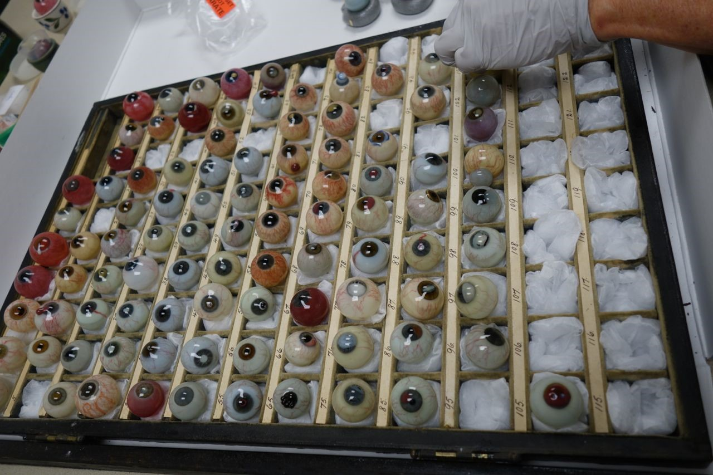Old cotton wool was removed and replaced by individually made pillows of archival materials.
Cleaning of the glass eyeballs
Each glass eyeball was
carefully cleaned. A detergent designed
specifically for cleaning glass was used for this process. Handling the eyeballs safely was a major
concern and we ended up using foam tubes to make little doughnuts for the glass
balls to sit in. The foam was held in
place with toothpicks, so their creation and adjustment was relatively quick.
During the cleaning we identified some additional cracks in the glass eyeballs
that hadn’t been obvious until they were wet up. This step was very satisfying as the eyeballs
went from dull and cloudy to glistening after cleaning.
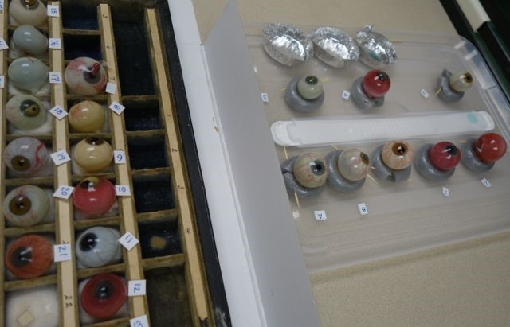Cleaning the glass and the compartments in the box.
Repairing of Glass Eyeballs
Before the eyeballs could be repaired,
those with unsightly or failing old repairs had to be undone. The method varied depending on the types of
repair materials previously used.
Several of the repairs had been done with red wax. The wax remained soft and sticky making it
messy and it did not closely resemble glass.
The wax material was removed by gently warming it. Some of the other old adhesives had failed after
becoming brittle. The brittle material
could be brushed from the surfaces, with special care taken to not scratch the
glass. Other old repair materials were
removed with solvents.
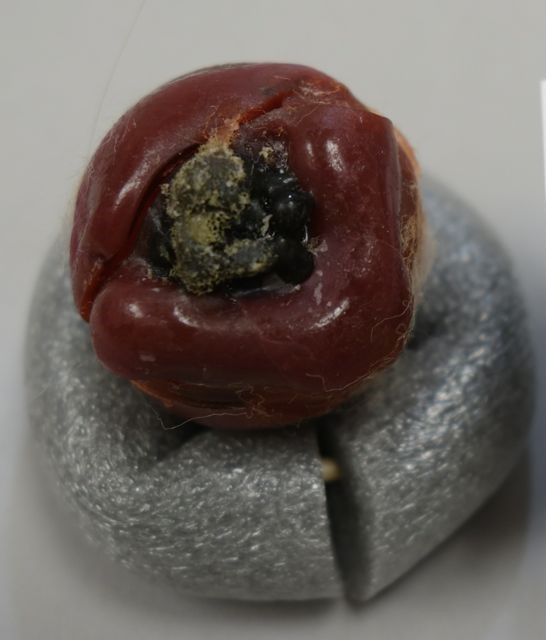
Old repair with red wax
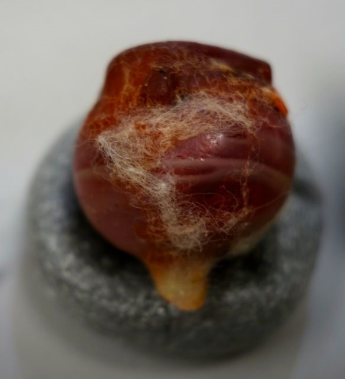Old repair with red wax
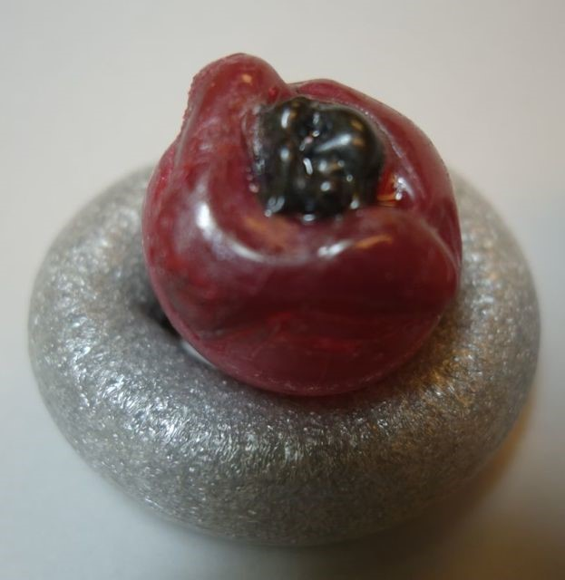
Old repair undone and redone with improved materials and techniques
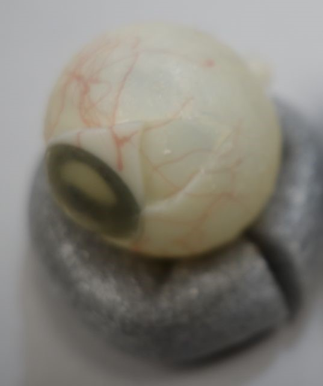Old repair with pieces misaligned
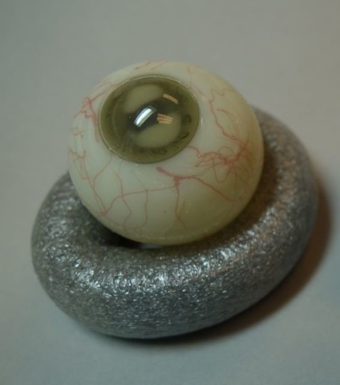Disassembled and repaired in proper alignment
Repairing
the individual eyeballs was the most challenging part of the process, as they
are thin and delicate. Added to that,
the high-grade epoxy that was designed for glass conservation can take several
days to fully set. While this can be advantageous,
as it allows adjustment of pieces, it also means the fine shards have to be
held in place for long periods of time while the resin sets. An advantage of
this epoxy is that it is very thin and can be fed by capillary action into
cracks. That property was useful for
many of the eyeballs. Also this adhesive has the added advantage of being far
superior to commercially available epoxy resins in terms of long-term stability
and greater light-stability, therefore it does not yellow like commercially
available epoxies.
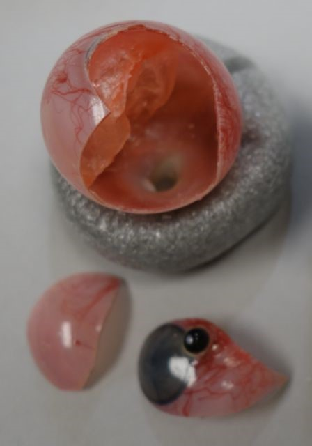Before treatment
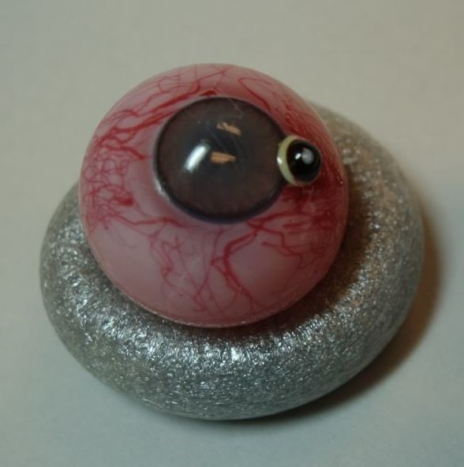
After cleaning and gluing
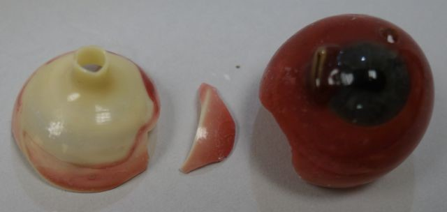Before treatment
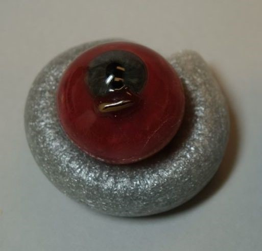
After cleaning and gluing
Once the eyeballs were repaired, a few had areas where the fragments of the glass were still missing. Glass eyeballs that were incomplete were filled with tinted thermoplastic resin mixtures and details such as veins, were inpainted (inpainting is the process of restoring lost or deteriorated surface decoration or details on an artwork) with commercially ground pigments in acrylic resin.
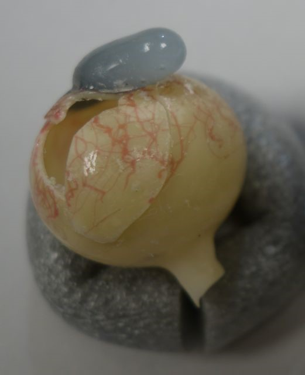Before treatment, misaligned and losses
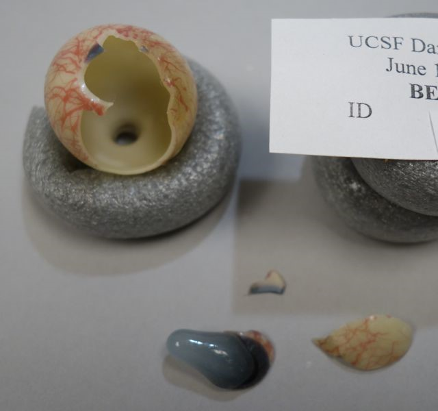Old repairs undone
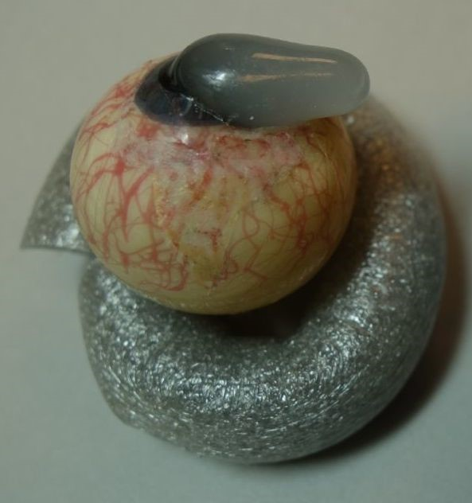Treatment completed with pieces glued together and area of loss filled and veins inpainted on the fill
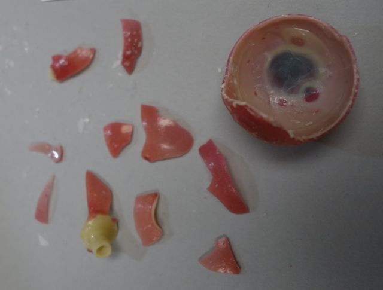Eyeball before treatment, in pieces but with some old repairs still intact
After removing old repairs
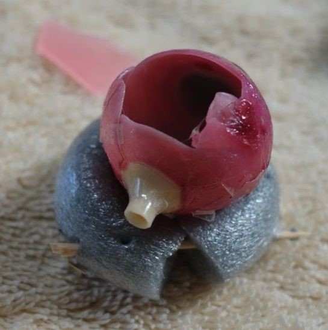Pieces glued together and held with tape. Area of loss remained
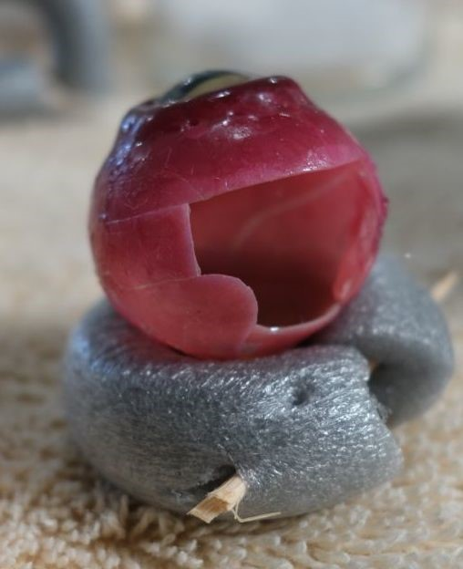Area of loss after gluing all pieces together
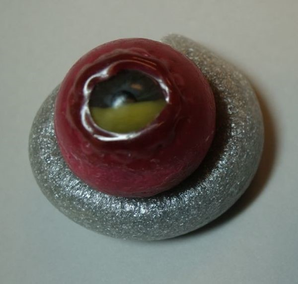After repair, glued together and area of loss filled with tinted resin mixture
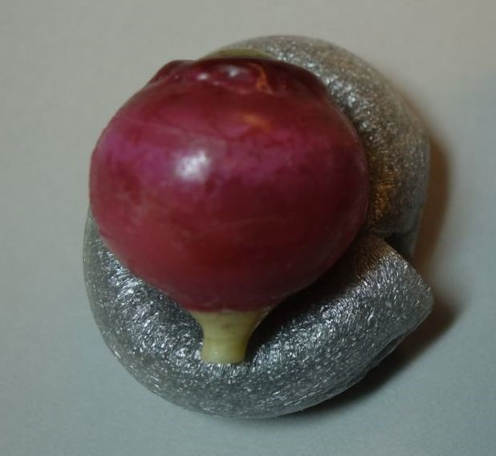After repair showing area that was filled
The glass eyeballs were incredible to work on. They were beautifully made, if often difficult to look at. Only one of the eyeballs examined was failing due to unstable glass, or a poor match between the cream under layer and the colored surface glass. The glass blower had incredible mastery in working with glass in addition to skill in depicting the defects and conditions. We hope that after this conservation project the glass eyeballs continue to illustrate medical conditions and inspire awe for years to come.
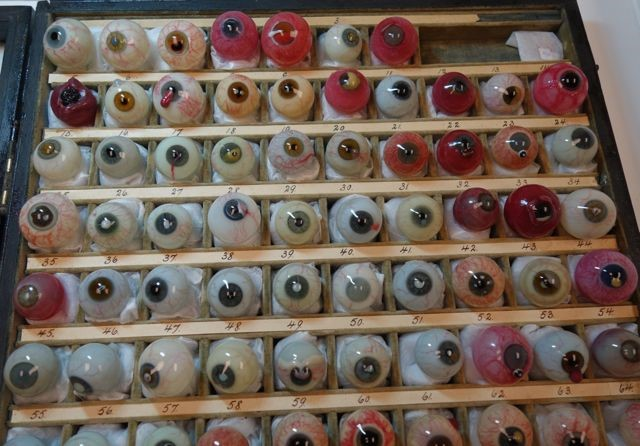After treatment
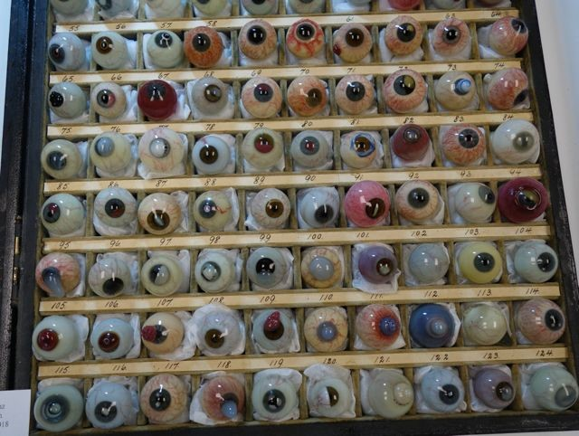After treatment
2 thoughts on “More than Meets the Eye: Restoring the Danz Collection”
Very glad that you are taking such good care of the collection. My grandmother would be proud!
A great history and story of preservation. Is it possible to actually see the collection in the archives and how could I go about doing that


Very glad that you are taking such good care of the collection. My grandmother would be proud!
A great history and story of preservation. Is it possible to actually see the collection in the archives and how could I go about doing that